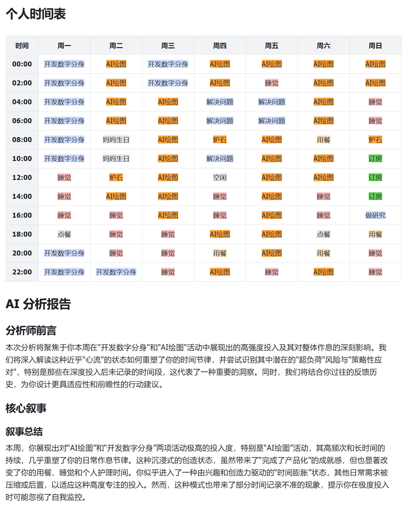
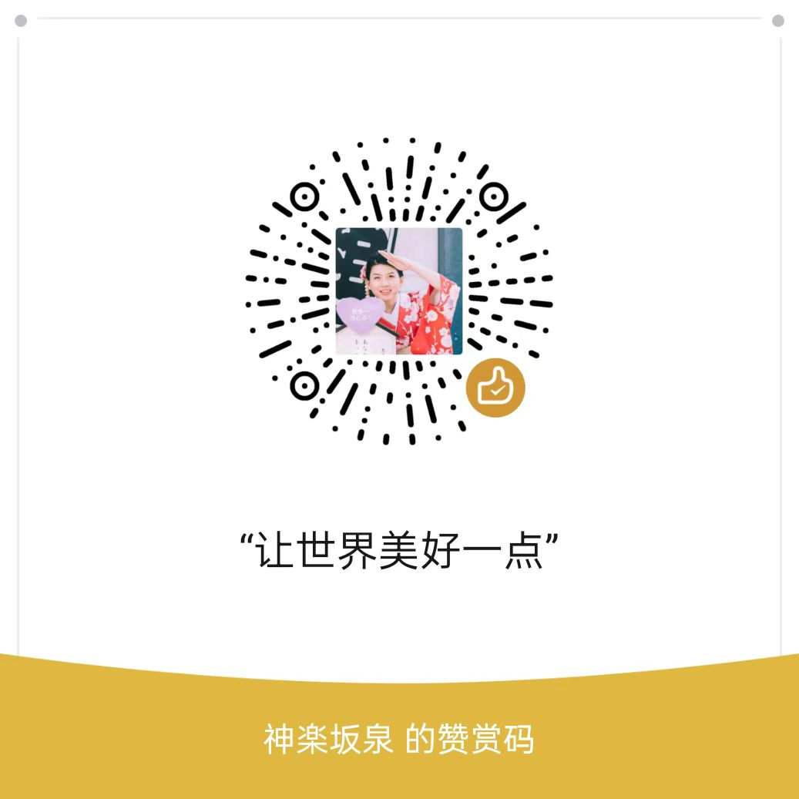

项目作品

AI分身
数字分身
在研项目
B站切片广告之友


B站切片广告之友
已上线厌倦了B站视频中猝不及防的恰饭广告？「B站切片广告之友」为您打造纯净的观看体验！这款智能Chrome插件，运用AI技术精准识别并自动跳过视频内的各类广告——无论是UP主中途的口播推广，还是传统的贴片广告，都能轻松搞定。
核心功能：
- AI智能识别，广告无踪：自动识别并跳过视频中和标题内容无关的各种广告，让您的观看流畅无打扰。
- 一键安装，即刻清爽：无需繁琐设置，安装插件即可享受纯净的B站时光。
- 效果统计，省时看得见：插件将记录并展示为您跳过的广告和节省的时间，让每一分专注都值得。
方案神器
已完成客户定制工具，专为智能家居设计的方案生成工具，整合行业洞察与最佳实践，快速生成动态的专业方案报价方案，并提供美观的手机端展示，方便客户随时随地查看。
LMarena辅助插件
已完成快速通过图片分辨率和文件格式判断nano模型，并可以反复重试生成图片并下载到本地。再次体现了浏览器插件而不是手机终端与AI时代的适配。
支持我
如果您觉得我的项目对您有所帮助，您可以通过以下方式支持我的工作：
- 通过赞赏码赞助，支持我继续开发更多有价值的项目
- 如果您是B站大会员，可以通过每月的B币给我发电支持
- 在GitHub上为我的项目点亮星标，这对我很有鼓励
- 将我的项目分享给可能需要的朋友，帮助更多人
您的每一份支持都会帮助我投入更多时间到开源项目中，创造更多有价值的工具。衷心感谢您的支持！

请在赞赏时留下您的B站数字ID
以便我及时收到您的支持